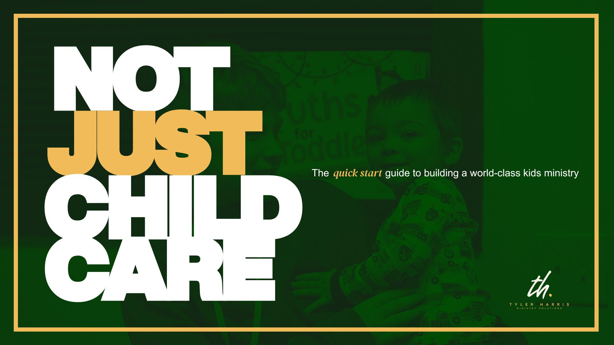

Most churches run childcare. The ones that grow build a kids ministry families can’t stop talking about. This free quick-start guide gives you the mindset, the team, and the experience that turn Sunday childcare into the front door of your church.
Why “childcare” thinking caps your growth, and the simple reframe that changes everything.
How to recruit, place, and keep volunteers who treat kids ministry like a calling, not a chore.
The check-in, safety, and Sunday experience that makes families say “we’re staying.”